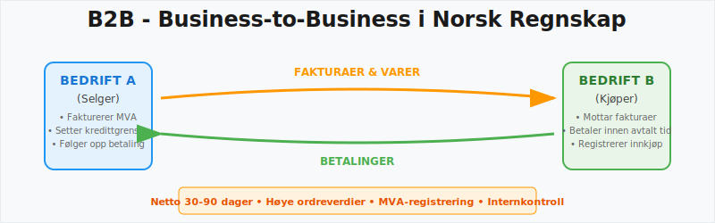
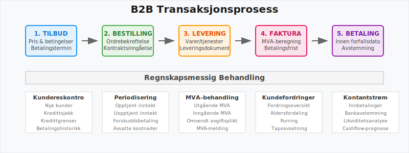
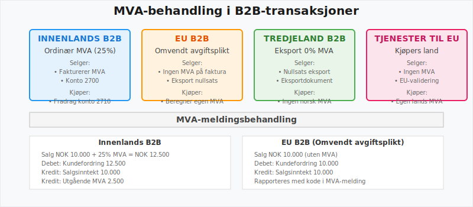
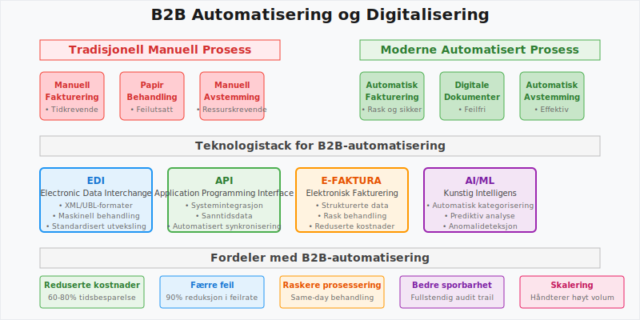
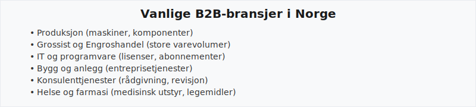

B2B (Business-to-Business) refererer til handel og kommersielle transaksjoner mellom bedrifter, i motsetning til Business-to-Consumer (B2C). I norsk regnskap og bokføring stiller B2B-handel spesifikke krav til fakturering, MVA-håndtering, betalingsbetingelser og regnskapsmessig behandling.

Definisjon og Betydning i Norsk Regnskap
B2B, eller Business-to-Business, beskriver salg av varer og tjenester fra én virksomhet til en annen. I norsk regnskap innebærer dette komplekse krav til fakturering, MVA-registrering og regnskapsføring.
B2B-handel skiller seg fra B2C-handel ved:
- Større transaksjonsverdier som påvirker balansen betydelig
- Lengre betalingsbetingelser som krever god likviditetsstyring
- Komplekse avtalestrukturer som påvirker periodisering
- Spesialiserte MVA-regler for internasjonale transaksjoner

Sentrale Kjennetegn ved B2B-transaksjoner
| Kjennetegn | Beskrivelse | Regnskapsmessig behandling |
|---|---|---|
| Langsiktige avtaler | Kontrakter med gjentakende leveranser og avtalte betalingsbetingelser | Kræver periodisering av inntekter |
| Betalingsbetingelser | Ofte Netto 30–90 dager; krever god internkontroll, i motsetning til B2C hvor betalinger skjer umiddelbart | Påvirker kundefordringer |
| Høye ordreverdier | Større volum og mer komplekse leveranser som påvirker balansen, i motsetning til B2C med mange små transaksjoner | Krever nøye bilagsføring |
| MVA-håndtering | Omvendt avgiftsplikt og spesifikke MVA-koder ved internasjonale transaksjoner | Spesielle krav til MVA-melding |
MVA og B2B-handel
I B2B-transaksjoner må selger normalt beregne og fakturere Merverdiavgift (MVA). Ved handel innenfor EU kan omvendt avgiftsplikt gjelde, slik at kjøperen selv beregner avgiften.
MVA-behandling i Ulike B2B-scenarioer
| Scenario | MVA-behandling | Regnskapsmessig håndtering |
|---|---|---|
| Innenlands B2B | Ordinær MVA (25%) | Standard konto 2700 |
| EU B2B | Omvendt avgiftsplikt | Spesialbehandling i MVA-melding |
| Tredjeland B2B | Ingen MVA ved eksport | Nullsats med dokumentasjon |
| Tjenester til EU | Kjøpers ansvar | Kræver EU-validering |

Ved omvendt avgiftsplikt skal:
- Selger ikke beregne MVA på fakturaen
- Kjøper beregne og betale MVA til norske myndigheter
- Begge parter rapportere transaksjonen i MVA-meldingen
B2B-fakturering og Betalingsbetingelser
I B2B-sammenheng krever fakturering detaljerte opplysninger som sikrer sporbarhet og regnskapsmessig korrekthet:
Obligatoriske Opplysninger på B2B-fakturaer
- Spesifiserte betalingsvilkår og forfallsdatoer
- Referansenummer for sporbarhet og avstemming
- Detaljert varelinjer med priser eksklusive og inklusive MVA
- Kontrakts- eller ordrenummer knyttet til leveranseavtalen
- Organisasjonsnummer for begge parter
- Leveringsdato og -adresse ved varelevering
Vanlige Betalingsbetingelser i B2B
| Betalingsbetingelse | Beskrivelse | Regnskapsmessig påvirkning |
|---|---|---|
| Netto 14 dager | Betaling innen 14 dager | Kort kundefordring |
| Netto 30 dager | Standard B2B-betingelse | Vanligste praksis |
| Netto 60 dager | Lengre kredittid | Økt arbeidskapital behov |
| Netto 90 dager | Spesielle avtaler | Krever god likviditetsstyring |
Digitalisering og Automatisering i B2B
Moderne B2B-handel krever effektiv systemintegrasjon og automatiserte prosesser:
Teknologiske Løsninger for B2B-handel
- EDI og strukturerte formater (XML, UBL) for maskinell behandling
- API-integrasjon og Automatisering mellom ERP-systemer
- Automatisk avstemming av innkommende betalinger
- Elektronisk fakturering og e-faktura-løsninger
- Automatisert purring ved forsinket betaling

Fordeler med Digitalisering
- Reduserte administrative kostnader gjennom automatisering
- Færre feilkilder ved manuell behandling
- Raskere fakturering og betalingsprosesser
- Bedre sporbarhet og dokumentasjon
- Integrert regnskapsføring fra ordre til betaling
Regnskapsmessig Behandling av B2B-transaksjoner
Viktige Kontoer for B2B-handel
| Konto | Beskrivelse | Anvendelse |
|---|---|---|
| 1550 | Kundefordringer konsern | B2B innen samme konsern |
| 2400 | Leverandørgjeld | Innkjøp fra B2B-leverandører |
| 2460 | Leverandørgjeld konsern | B2B innen samme konsern |
| 2700 | Utgående MVA | MVA på B2B-salg |
Periodisering i B2B-handel
Ved langsiktige B2B-avtaler kreves korrekt periodisering:
- Opptjent, ikke fakturert inntekt på konto 1530
- Forskuddsbetalinger på konto 1480
- Uopptjent inntekt på konto 2160
Risikostyring i B2B-handel
Kredittvurdering og Risiko
B2B-handel innebærer ofte høyere kredittrisiko enn B2C-handel:
- Kredittvurdering av nye B2B-kunder
- Kredittgrenser basert på kundens betalingsevne
- Kredittoversikt og regelmessig oppfølging
- Avsetning for tap på konto 1580
Internkontroll for B2B-prosesser
Effektiv internkontroll krever:
- Segregering av oppgaver mellom salg, fakturering og innkreving
- Godkjenningsrutiner for kredittgrenser og betalingsbetingelser
- Regelmessig avstemming av kundefordringer
- Oppfølging av forfallne fordringer og purring
Internasjonale B2B-transaksjoner
Spesielle Hensyn ved Internasjonal B2B-handel
| Aspekt | Krav | Regnskapsmessig behandling |
|---|---|---|
| Valuta | Omregning til NOK - se Big Mac-indeksen for valutavurdering | Kursgevinst/-tap på [konto 8150/8190] |
| Dokumentasjon | Eksportdokumenter | Kræver spesiell arkivering |
| MVA-frittak | Nullsats ved eksport | Spesialbehandling i MVA-melding |
| Toll og avgifter | Importavgifter | Inngår i anskaffelseskost |
Vanlige Utfordringer og Løsninger
| Utfordring | Løsning og beste praksis |
|---|---|
| Forsinket betaling | Klare kontraktsvilkår, automatisert purring og kredittvurdering |
| Feil i fakturainformasjon | Standardiserte maler, validering mot fakturakrav |
| Manglende MVA-dokumentasjon | Systematisk MVA-rapportering og periodisk avstemming |
| Ulik systemintegrasjon | Bruk av åpne API-er og EDI-standarder |
| Komplekse betalingsbetingelser | Detaljerte avtaler og systematisk oppfølging, i motsetning til B2C med umiddelbare betalinger |
Rapportering og Analyse i B2B
Viktige Nøkkeltall for B2B-virksomheter
- Gjennomsnittlig betalingstid - måler kunders betalingsdisiplin
- Kredittapsprosent - andel av kundefordringer som ikke innbetales
- Gjennomsnittlig ordrestørrelse - påvirker likviditetsbehov
- Kundekonsentrasjon - risiko ved avhengighet av få store kunder
Regnskapsrapporter for B2B-analyse
- Aldersfordeling av kundefordringer - viser betalingsmønster
- Kredittkvalitetsrapport - oversikt over kunders kredittverdighet
- Salgsanalyse per kunde - identifiserer viktige kunder
- Lønnsomhetsanalyse - dekningsbidrag per kunde
Juridiske Aspekter ved B2B-handel
Kontraktstyper i B2B
- Rammeavtaler - langsiktige leveranseavtaler
- Spotkontrakter - enkeltstående transaksjoner
- Serviceavtaler - kontinuerlige tjenester
- Leverandøravtaler - avtaler om gjentakende leveranser
Tvister og Konflikthåndtering
Ved betalingstvister i B2B-handel:
- Minnelig løsning gjennom direkte dialog
- Inkasso gjennom inkassoselskap
- Rettslige skritt ved større beløp
- Avsetning for tap på konto 1580
Fremtidige Trender i B2B-handel
Teknologiske Utviklingstrekk
- Kunstig intelligens for automatisert fakturahåndtering
- Blockchain for sikker dokumentasjon
- Sanntids betalinger gjennom nye betalingssystemer
- Integrerte plattformløsninger for hele verdikjeden
Regulatoriske Endringer
- E-faktura obligatorisk for offentlige kunder
- Nye MVA-regler for digitale tjenester
- Økt krav til dokumentasjon og sporbarhet
Vanlige Bransjer og Brukstilfeller

| Bransje | Typiske varer/tjenester | Regnskapsmessige hensyn |
|---|---|---|
| Produksjon | Maskiner, komponenter | Lagerstyring, periodisering av inntekter |
| Grossist/Engroshandel | Store varevolumer | Kundefordringer, kredittstyring |
| IT og programvare | Lisenser, abonnementer | Opptjening av inntekter, kontraktsstyring |
| Bygg og anlegg | Entreprisetjenester | Prosjektregnskap, påløpte kostnader |
| Konsulenttjenester | Rådgivning, revisjon | Timeføringer, forskuddsbetalinger |
| Helse og farmasi | Medisinsk utstyr, legemidler | Spesialisert MVA-koding, sporbarhet |
B2B-handel krever både teknisk og prosessuell innsikt for å sikre effektiv drift, korrekt regnskapsføring og etterlevelse av norske regelverk. Systematisk oppfølging av betalingsbetingelser, MVA-håndtering og internkontroll er avgjørende for suksess i B2B-markedet.